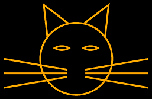

SVG Path Data in SkiaSharp
Define paths using text strings in the Scalable Vector Graphics format
The SKPath class supports the definition of entire path objects from text strings in a format established by the Scalable Vector Graphics (SVG) specification. You'll see later in this article how you can represent an entire path such as this one in a text string:

SVG is an XML-based graphics programming language for web pages. Because SVG must allow paths to be defined in markup rather than a series of function calls, the SVG standard includes an extremely concise way of specifying an entire graphics path as a text string.
Within SkiaSharp, this format is referred to as "SVG path-data." The format is also supported in Windows XAML-based programming environments, including the Windows Presentation Foundation and the Universal Windows Platform, where it is known as the Path Markup Syntax or the Move and draw commands syntax. It can also serve as an exchange format for vector graphics images, particularly in text-based files such as XML.
The SKPath class defines two methods with the words SvgPathData in their names:
public static SKPath ParseSvgPathData(string svgPath)
public string ToSvgPathData()
The static ParseSvgPathData method converts a string to an SKPath object, while ToSvgPathData converts an SKPath object to a string.
Here's an SVG string for a five-pointed star centered on the point (0, 0) with a radius of 100:
"M 0 -100 L 58.8 90.9, -95.1 -30.9, 95.1 -30.9, -58.8 80.9 Z"
The letters are commands that build an SKPath object: M indicates a MoveTo call, L is LineTo, and Z is Close to close a contour. Each number pair provides an X and Y coordinate of a point. Notice that the L command is followed by multiple points separated by commas. In a series of coordinates and points, commas and whitespace are treated identically. Some programmers prefer to put commas between the X and Y coordinates rather than between the points, but commas or spaces are only required to avoid ambiguity. This is perfectly legal:
"M0-100L58.8 90.9-95.1-30.9 95.1-30.9-58.8 80.9Z"
The syntax of SVG path data is formally documented in Section 8.3 of the SVG specification. Here is a summary:
MoveTo
M x y
This begins a new contour in the path by setting the current position. Path data should always begin with an M command.
LineTo
L x y ...
This command adds a straight line (or lines) to the path and sets the new current position to the end of the last line. You can follow the L command with multiple pairs of x and y coordinates.
Horizontal LineTo
H x ...
This command adds a horizontal line to the path and sets the new current position to the end of the line. You can follow the H command with multiple x coordinates, but it doesn't make much sense.
Vertical Line
V y ...
This command adds a vertical line to the path and sets the new current position to the end of the line.
Close
Z
The C command closes the contour by adding a straight line from the current position to the beginning of the contour.
ArcTo
The command to add an elliptical arc to the contour is by far the most complex command in the entire SVG path-data specification. It is the only command in which numbers can represent something other than coordinate values:
A rx ry rotation-angle large-arc-flag sweep-flag x y ...
The rx and ry parameters are the horizontal and vertical radii of the ellipse. The rotation-angle is clockwise in degrees.
Set the large-arc-flag to 1 for the large arc or to 0 for the small arc.
Set the sweep-flag to 1 for clockwise and to 0 for counter-clockwise.
The arc is drawn to the point (x, y), which becomes the new current position.
CubicTo
C x1 y1 x2 y2 x3 y3 ...
This command adds a cubic Bézier curve from the current position to (x3, y3), which becomes the new current position. The points (x1, y1) and (x2, y2) are control points.
Multiple Bézier curves can be specified by a single C command. The number of points must be a multiple of 3.
There is also a "smooth" Bézier curve command:
S x2 y2 x3 y3 ...
This command should follow a regular Bézier command (although that's not strictly required). The smooth Bézier command calculates the first control point so that it is a reflection of the second control point of the previous Bézier around their mutual point. These three points are therefore colinear, and the connection between the two Bézier curves is smooth.
QuadTo
Q x1 y1 x2 y2 ...
For quadratic Bézier curves, the number of points must be a multiple of 2. The control point is (x1, y1) and the end point (and new current position) is (x2, y2)
There is also a smooth quadratic curve command:
T x2 y2 ...
The control point is calculated based on the control point of the previous quadratic curve.
All these commands are also available in "relative" versions, where the coordinate points are relative to the current position. These relative commands begin with lower-case letters, for example c rather than C for the relative version of the cubic Bézier command.
This is the extent of the SVG path-data definition. There is no facility for repeating groups of commands or for performing any type of calculation. Commands for ConicTo or the other types of arc specifications are not available.
The static SKPath.ParseSvgPathData method expects a valid string of SVG commands. If any syntax error is detected, the method returns null. That is the only error indication.
The ToSvgPathData method is handy for obtaining SVG path data from an existing SKPath object to transfer to another program, or to store in a text-based file format such as XML. (The ToSvgPathData method is not demonstrated in sample code in this article.) Do not expect ToSvgPathData to return a string corresponding exactly to the method calls that created the path. In particular, you'll discover that arcs are converted to multiple QuadTo commands, and that's how they appear in the path data returned from ToSvgPathData.
The Path Data Hello page spells out the word "HELLO" using SVG path data. Both the SKPath and SKPaint objects are defined as fields in the PathDataHelloPage class:
public class PathDataHelloPage : ContentPage
{
SKPath helloPath = SKPath.ParseSvgPathData(
"M 0 0 L 0 100 M 0 50 L 50 50 M 50 0 L 50 100" + // H
"M 125 0 C 60 -10, 60 60, 125 50, 60 40, 60 110, 125 100" + // E
"M 150 0 L 150 100, 200 100" + // L
"M 225 0 L 225 100, 275 100" + // L
"M 300 50 A 25 50 0 1 0 300 49.9 Z"); // O
SKPaint paint = new SKPaint
{
Style = SKPaintStyle.Stroke,
Color = SKColors.Blue,
StrokeWidth = 10,
StrokeCap = SKStrokeCap.Round,
StrokeJoin = SKStrokeJoin.Round
};
...
}
The path defining the text string begins at the upper-left corner at the point(0, 0). Each letter is 50 units wide and 100 units tall, and letters are separated by another 25 units, which means that the entire path is 350 units wide.
The 'H' of "Hello" is composed of three one-line contours, while the 'E' is two connected cubic Bézier curves. Notice that the C command is followed by six points, and two of the control points have Y coordinates of –10 and 110, which puts them outside the range of the Y coordinates of the other letters. The 'L' is two connected lines, while the 'O' is an ellipse that is rendered with an A command.
Notice that the M command that begins the last contour sets the position to the point (350, 50), which is the vertical center of the left side of the 'O'. As indicated by the first numbers following the A command, the ellipse has a horizontal radius of 25 and a vertical radius of 50. The end point is indicated by the last pair of numbers in the A command, which represents the point (300, 49.9). That's deliberately just slightly different from the start point. If the endpoint is set equal to the start point, the arc will not be rendered. To draw a complete ellipse, you must set the endpoint close to (but not equal to) the start point, or you must use two or more A commands, each for part of the complete ellipse.
You might want to add the following statement to the page's constructor, and then set a breakpoint to examine the resultant string:
string str = helloPath.ToSvgPathData();
You'll discover that the arc has been replaced with a long series of Q commands for a piecemeal approximation of the arc using quadratic Bézier curves.
The PaintSurface handler obtains the tight bounds of the path, which does not include the control points for the 'E' and 'O' curves. The three transforms move the center of the path to the point (0, 0), scale the path to the size of the canvas (but also taking the stroke width into account), and then move the center of the path to the center of the canvas:
public class PathDataHelloPage : ContentPage
{
...
void OnCanvasViewPaintSurface(object sender, SKPaintSurfaceEventArgs args)
{
SKImageInfo info = args.Info;
SKSurface surface = args.Surface;
SKCanvas canvas = surface.Canvas;
canvas.Clear();
SKRect bounds;
helloPath.GetTightBounds(out bounds);
canvas.Translate(info.Width / 2, info.Height / 2);
canvas.Scale(info.Width / (bounds.Width + paint.StrokeWidth),
info.Height / (bounds.Height + paint.StrokeWidth));
canvas.Translate(-bounds.MidX, -bounds.MidY);
canvas.DrawPath(helloPath, paint);
}
}
The path fills the canvas, which looks more reasonable when viewed in landscape mode:
{kind=link}
The Path Data Cat page is similar. The path and paint objects are both defined as fields in the PathDataCatPage class:
public class PathDataCatPage : ContentPage
{
SKPath catPath = SKPath.ParseSvgPathData(
"M 160 140 L 150 50 220 103" + // Left ear
"M 320 140 L 330 50 260 103" + // Right ear
"M 215 230 L 40 200" + // Left whiskers
"M 215 240 L 40 240" +
"M 215 250 L 40 280" +
"M 265 230 L 440 200" + // Right whiskers
"M 265 240 L 440 240" +
"M 265 250 L 440 280" +
"M 240 100" + // Head
"A 100 100 0 0 1 240 300" +
"A 100 100 0 0 1 240 100 Z" +
"M 180 170" + // Left eye
"A 40 40 0 0 1 220 170" +
"A 40 40 0 0 1 180 170 Z" +
"M 300 170" + // Right eye
"A 40 40 0 0 1 260 170" +
"A 40 40 0 0 1 300 170 Z");
SKPaint paint = new SKPaint
{
Style = SKPaintStyle.Stroke,
Color = SKColors.Orange,
StrokeWidth = 5
};
...
}
The head of a cat is a circle, and here it is rendered with two A commands, each of which draws a semicircle. Both A commands for the head define horizontal and vertical radii of 100. The first arc begins at (240, 100) and ends at (240, 300), which becomes the start point for the second arc that ends back at (240, 100).
The two eyes are also rendered with two A commands, and as with the cat's head, the second A command ends at the same point as the start of the first A command. However, these pairs of A commands do not define an ellipse. The with of each arc is 40 units and the radius is also 40 units, which means that these arcs are not full semicircles.
The PaintSurface handler performs similar transforms as the previous sample, but sets a single Scale factor to maintain the aspect ratio and provide a little margin so the cat's whiskers don't touch the sides of the screen:
public class PathDataCatPage : ContentPage
{
...
void OnCanvasViewPaintSurface(object sender, SKPaintSurfaceEventArgs args)
{
SKImageInfo info = args.Info;
SKSurface surface = args.Surface;
SKCanvas canvas = surface.Canvas;
canvas.Clear(SKColors.Black);
SKRect bounds;
catPath.GetBounds(out bounds);
canvas.Translate(info.Width / 2, info.Height / 2);
canvas.Scale(0.9f * Math.Min(info.Width / bounds.Width,
info.Height / bounds.Height));
canvas.Translate(-bounds.MidX, -bounds.MidY);
canvas.DrawPath(catPath, paint);
}
}
Here's the program running:
{kind=link}
Normally, when an SKPath object is defined as a field, the contours of the path must be defined in the constructor or another method. When using SVG path data, however, you've seen that the path can be specified entirely in the field definition.
The earlier Ugly Analog Clock sample in the The Rotate Transform article displayed the hands of the clock as simple lines. The Pretty Analog Clock program below replaces those lines with SKPath objects defined as fields in the PrettyAnalogClockPage class along with SKPaint objects:
public class PrettyAnalogClockPage : ContentPage
{
...
// Clock hands pointing straight up
SKPath hourHandPath = SKPath.ParseSvgPathData(
"M 0 -60 C 0 -30 20 -30 5 -20 L 5 0" +
"C 5 7.5 -5 7.5 -5 0 L -5 -20" +
"C -20 -30 0 -30 0 -60 Z");
SKPath minuteHandPath = SKPath.ParseSvgPathData(
"M 0 -80 C 0 -75 0 -70 2.5 -60 L 2.5 0" +
"C 2.5 5 -2.5 5 -2.5 0 L -2.5 -60" +
"C 0 -70 0 -75 0 -80 Z");
SKPath secondHandPath = SKPath.ParseSvgPathData(
"M 0 10 L 0 -80");
// SKPaint objects
SKPaint handStrokePaint = new SKPaint
{
Style = SKPaintStyle.Stroke,
Color = SKColors.Black,
StrokeWidth = 2,
StrokeCap = SKStrokeCap.Round
};
SKPaint handFillPaint = new SKPaint
{
Style = SKPaintStyle.Fill,
Color = SKColors.Gray
};
...
}
The hour and minute hands now have enclosed areas. To make those hands distinct from each other, they are drawn with both a black outline and gray fill using the handStrokePaint and handFillPaint objects.
In the earlier Ugly Analog Clock sample, the little circles that marked the hours and minutes were drawn in a loop. In this Pretty Analog Clock sample, an entirely different approach is used: the hour and minute marks are dotted lines drawn with the minuteMarkPaint and hourMarkPaint objects:
public class PrettyAnalogClockPage : ContentPage
{
...
SKPaint minuteMarkPaint = new SKPaint
{
Style = SKPaintStyle.Stroke,
Color = SKColors.Black,
StrokeWidth = 3,
StrokeCap = SKStrokeCap.Round,
PathEffect = SKPathEffect.CreateDash(new float[] { 0, 3 * 3.14159f }, 0)
};
SKPaint hourMarkPaint = new SKPaint
{
Style = SKPaintStyle.Stroke,
Color = SKColors.Black,
StrokeWidth = 6,
StrokeCap = SKStrokeCap.Round,
PathEffect = SKPathEffect.CreateDash(new float[] { 0, 15 * 3.14159f }, 0)
};
...
}
The Dots and Dashes article discussed how you can use the SKPathEffect.CreateDash method to create a dashed line. The first argument is a float array that generally has two elements: The first element is the length of the dashes, and the second element is the gap between the dashes. When the StrokeCap property is set to SKStrokeCap.Round, then the rounded ends of the dash effectively lengthen the dash length by the stroke width on both sides of the dash. Thus, setting the first array element to 0 creates a dotted line.
The distance between these dots is governed by the second array element. As you'll see shortly, these two SKPaint objects are used to draw circles with a radius of 90 units. The circumference of this circle is therefore 180π, which means that the 60 minute marks must appear every 3π units, which is the second value in the float array in minuteMarkPaint. The 12 hour marks must appear every 15π units, which is the value in the second float array.
The PrettyAnalogClockPage class sets a timer to invalidate the surface every 16 milliseconds, and the PaintSurface handler is called at that rate. The earlier definitions of the SKPath and SKPaint objects allow for very clean drawing code:
public class PrettyAnalogClockPage : ContentPage
{
...
void OnCanvasViewPaintSurface(object sender, SKPaintSurfaceEventArgs args)
{
SKImageInfo info = args.Info;
SKSurface surface = args.Surface;
SKCanvas canvas = surface.Canvas;
canvas.Clear();
// Transform for 100-radius circle in center
canvas.Translate(info.Width / 2, info.Height / 2);
canvas.Scale(Math.Min(info.Width / 200, info.Height / 200));
// Draw circles for hour and minute marks
SKRect rect = new SKRect(-90, -90, 90, 90);
canvas.DrawOval(rect, minuteMarkPaint);
canvas.DrawOval(rect, hourMarkPaint);
// Get time
DateTime dateTime = DateTime.Now;
// Draw hour hand
canvas.Save();
canvas.RotateDegrees(30 * dateTime.Hour + dateTime.Minute / 2f);
canvas.DrawPath(hourHandPath, handStrokePaint);
canvas.DrawPath(hourHandPath, handFillPaint);
canvas.Restore();
// Draw minute hand
canvas.Save();
canvas.RotateDegrees(6 * dateTime.Minute + dateTime.Second / 10f);
canvas.DrawPath(minuteHandPath, handStrokePaint);
canvas.DrawPath(minuteHandPath, handFillPaint);
canvas.Restore();
// Draw second hand
double t = dateTime.Millisecond / 1000.0;
if (t < 0.5)
{
t = 0.5 * Easing.SpringIn.Ease(t / 0.5);
}
else
{
t = 0.5 * (1 + Easing.SpringOut.Ease((t - 0.5) / 0.5));
}
canvas.Save();
canvas.RotateDegrees(6 * (dateTime.Second + (float)t));
canvas.DrawPath(secondHandPath, handStrokePaint);
canvas.Restore();
}
}
Something special is done with the second hand, however. Because the clock is updated every 16 milliseconds, the Millisecond property of the DateTime value can potentially be used to animate a sweep second hand instead of one that moves in discrete jumps from second to second. But this code does not allow the movement to be smooth. Instead, it uses the Xamarin.Forms SpringIn and SpringOut animation easing functions for a different kind of movement. These easing functions cause the second hand to move in a jerkier manner — pulling back a little before it moves, and then slightly over-shooting its destination, an effect that unfortunately can't be reproduced in these static screenshots:
{kind=link}